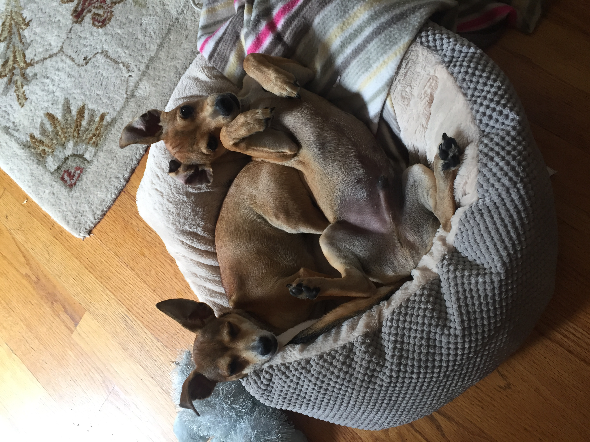
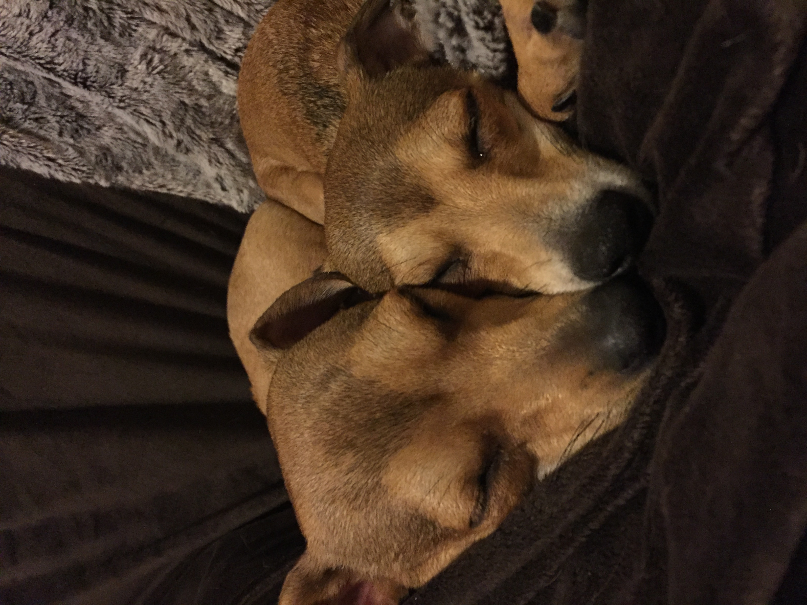
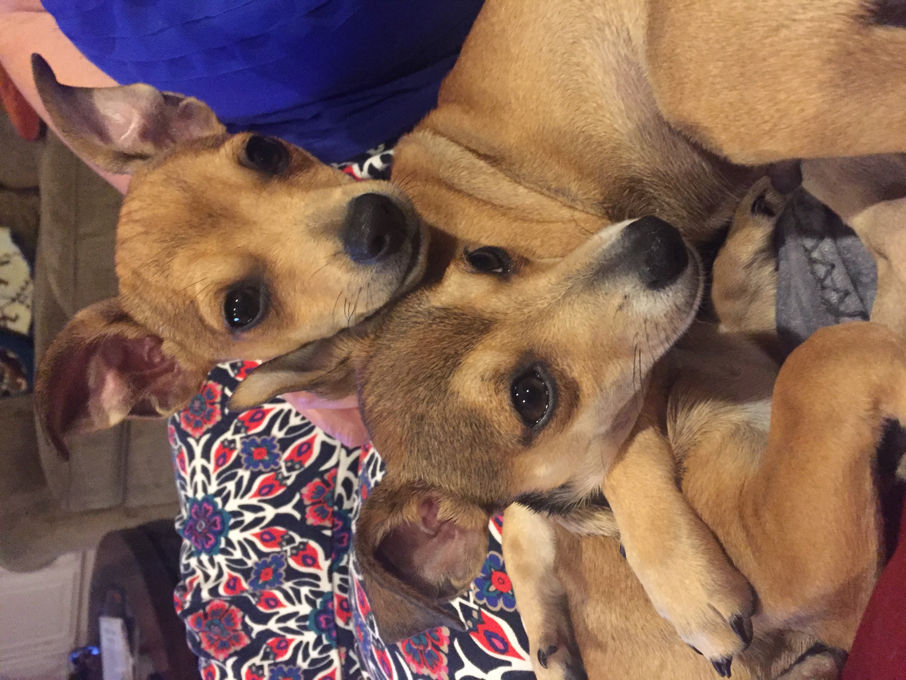

Nicole Comfort
PhD Student | Millenial | Dog Mom
Hi, I’m Nicole
My name is Nicole Comfort. I was born and raised in Middlesex County in Massachusetts and so am an obnoxious New England sports fan by default (Go Sox!). If I’m not wearing Boston sports T-shirts, you’ll find me in some free swag I got in college. In 2015 I graduated from Northeastern University (Boston, MA) with a B.S. in Behavioral Neuroscience.
(add image later)
I come from a big, loud family and like to visit them as much as I can!
(add image later)
On the first day of fall this year, I got engaged to my best friend and boyfriend of ten years. I must say, wedding planning is fun but awfully distracting from school and research!
(add image later)
I’m a PhD student
That’s right, I’m (still) in school. I’m a third year PhD student at Columbia University studying Environmental Health Science.
My research interests are:
Oh, and I’m a dog mom
As if life wasn’t hectic enough, I have my two dogs here with me in NYC:




This one is named Andy:

And this is his brother, Rocco:
Contact me
Email: add my email link